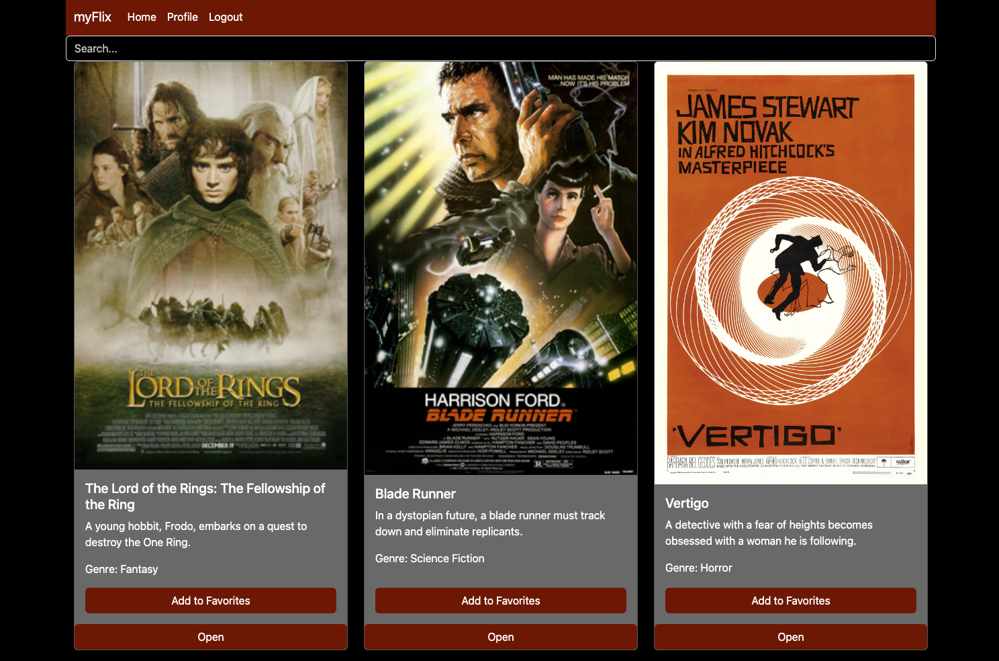

myFlix
myFlix is a full-stack movie database application designed for movie enthusiasts. It consists of a React-based frontend and a RESTful API backend, allowing users to browse, search, and manage their favorite movies. The app provides a seamless experience, enabling users to filter movies, and manage their personal profiles.
Project Objective
myFlix is built to provide an engaging and user-friendly platform where movie lovers can:
- Browse and search a curated collection of different movies
- View detailed information about movies
- Filter movies by title
- Create an account, manage their profile, and maintain a personal favorites list
- Enjoy a clean, responsive UI with intuitive navigation
Technology Used
Client
- React - For a dynamic and interactive user experience
- React Router - For seamless navigation
- Redux - For efficient state management
- Bootstrap 5.3 & SASS - For responsive styling and UI components
- Parcel - Fast and efficient bundling
- Netlify - For easy frontend deployment
Backend
The client connects to movie API, a RESTful backend that provides real-time movie data and handles user authentication. It is built using:
- Node.js & Express - For handling API requests
- MongoDB & Mongoose - For storing and managing movie/user data
- JWT & Passport.js - For secure authentication
- CORS - To enable cross-origin API requests
- MongoDB Atlas - Cloud-based database storage
- Heroku - For backend deployment
Reflections on the project
The development of the myFlix Client was a great learning experience. The introduction to the JavaScript framework React was something I was really working towards to, because React is part of the tech stack of the company I'm currently employed at. This gave me an impression of what my future work could look like. During this project, I encountered various problems related to outdated materials from the course, so I had to actively search for solutions to my problems. This allowed me to significantly improve my problem-solving skills.